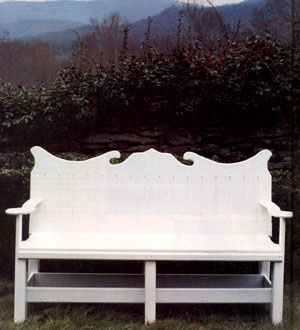
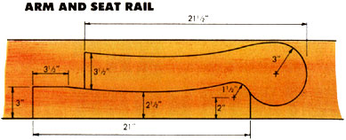
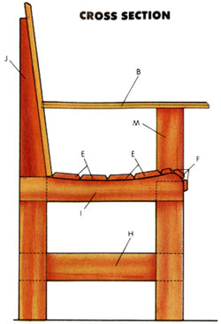
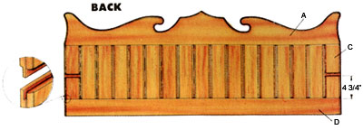
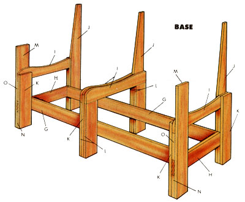
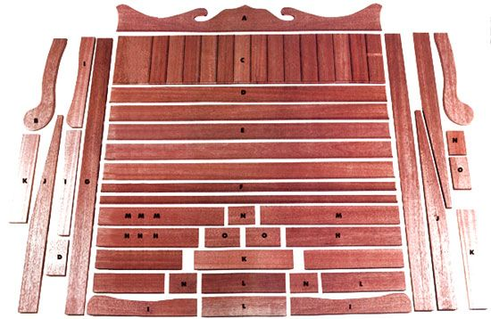

Issue # 110 - March/April 1988
A classic British-style garden bench for the American builder
Whether just a simple courtyard or an ambitious showcase, the garden-as-retreat has always been a calming, secluded and inviting spot, where a comfortable place to sit is as welcome as the plantings themselves.
Traditionally, the best garden benches have been made of teak or some other rotresistant wood such as mahogany. But prohibitive costs and a conscious awareness of the significance of tropical rain forests-from which much of this imported wood is harvested-has noticeably altered this practice.
Nonetheless, the garden bench, or "range", endures in many forms and has long since come out of the garden and onto the porch or open lawn. MOTHER staffer Dennis Burkholder recently made his contribution to the genre with the model you see here and put his name to it just to preserve tradition. It's pleasing enough to the eye, but its real beauty results from its careful planning.
For one, every bit of wood in it is a standard board size-either 1 X 4 or 1 X 8. For a painted finish, a clear pine or any common lumber stock will work well, but a natural surface demands a more resistant species such as redwood, cedar or cypress. Oak should be considered only if it's kilndried and well protected with several coats of gloss or spar varnish.
Appealing, too, is the fact that the parts don't require a whole lot of fancy trimming if you're simply in the market for a basic bench. The accompanying cutting guide shows you exactly what lengths to make each piece, and the project fits together nicely even without the detail work. The bench's solid look comes from tripling the pieces at the legs, a practice which keeps its weight close to the ground and allows the use of a simple form of mortise-and-tenon joinery.
Even given the simple design, there are a few power tools that'll make building this project easier yet:
A table saw- the flat back spindles are held in grooves cut into the crest and back rail. To make these slots, the tongues that match them and the grooves that secure the arms to the back, a saw with a combination or, better yet, a dado-cutting blade is essential.
A jigsaw- perhaps a dyed-in-the-wool purist would do the scroll cutting on the crest, the arms and the seat rails with a hand-held keyhole saw, but most people would prefer a jigsaw to make these long, curved cuts.
A router- fitted with a 1/4" beading bit, this rotary trimming tool will make short work of the relief detailing at the edges of the crest, the spindles, the slats and arms, or anywhere else you might wish to add some finishing flair.
Of course, you'll need some standard woodworking tools as well. A Phillips-head screwdriver, a tape measure, some pipe clamps, sanding supplies and an electric drill with a 3/32" bit (and a No. 2 Phillips power drive bit, if you have one) should be the only additional items required.
Refer to the guide to plan your raw-lumber needs, then use it again to determine which parts can be cut from the given lengths. Make each final cut carefully, then concentrate on working the individual pieces. Keep in mind that the three calf slats will be ripped to a 1 1/2" width.
Make the 1/4" X 1/4" grooves in the crest and back rail first, then cut the tongues into the 17 spindles to match. Trim out a 1/4" X 3/4" arm slot in two of the spindles (the lower edge of each should be 4 3/4" from the board's end), then cut a taper into each of the three upright stiles, beginning at a point 18" from the bottom and ending so there's 1" of width at the top. This will rake the seat back at a comfortable angle.
Next, use your jigsaw to cut the shape of the crest. You can use our pattern as a guide or create a simpler design (be sure it's wide enough to gain adequate support from the stiles). One way to guarantee that each side will be symmetrical is to cut half the pattern into a strip of heavy paper, then trace it onto each half of the wood, making certain to reverse the paper for the second tracing.
Both arms and two of the curved seat rails can be cut from two 26 1/2"-long 1 X 8 sections if you follow the inset illustration. The other two seat supports come from the remainder of the six-foot 1 X 4.
Now's the time, if you wish, to rout the beading details into the edges of the parts that beg for embellishment. Feel free to do as little or as much face-trimming as you desire, because it won't compromise the strength of the bench at all. The 1/4" bead, by the way, is simply an arbitrary style; you can use anything from a plain rounding-over bit to a fan cy filleted ogee. If you're using a router for the first time, you'll find that it takes a much cleaner slice if you move the bit forward to cut against its direction of rotation.
Begin assembly by trial-fitting the back pieces. Assuming that the spindles come flush to the ends of the rails (if they don't, you'll have to either trim or space so they will), lay a moderate bead of construction adhesive into the crest and back rail grooves, then position the spindles and clamp the parts from the top and bottom. Make certain that the cross-slotted spindles are at the flanks, facing forward with the short ends down.
While that's bonding, go on to piece together the base. As the main illustration suggests, it's far easier to make each of the three support units separately, then join them with the front and back rails after they're completed. Like the back assembly, the parts are glued together first . . . but the union is stronger yet, because the key pieces 1) join in mortise-and-tenon fashion between the spacers, and 2) are held together with No. 8 cabinet screws, which can be driven from both sides for maximum strength.
After the three standing units are squared up and the lower rails attached, the finished back can be glued to the stiles and fastened with screws, then the seat and calf slats attached to the curved rails. The arms go on last, fastened from the top and through the back of each one's spindle.
Before you do any kind of finishing, you may want to cover the screwhead holes with wood filler. Naturally, if you're concerned that the heads won't seat below the surface, you can predrill all the holes and use a countersink on the openings. To get the best results from any finish, sand the entire bench smooth and make sure there's no oil on the surface. Prime before painting, or, if you're using a clear varnish, stir, rather than shake, the mixture and wipe off any loose dust.
No finish will last a lifetime, so plan on recoating the surface every few years as needed. Taken optimistically, this means that the bench will require a good deal less attention than your garden.
|
 |
 |
 |
|
 |
 |
 |